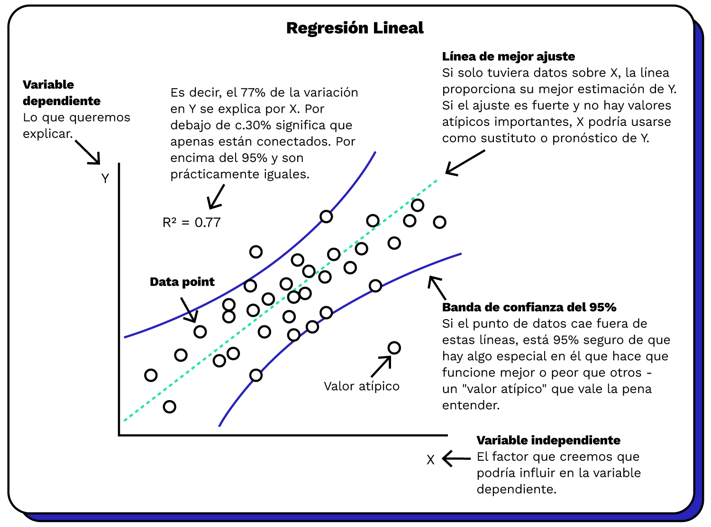
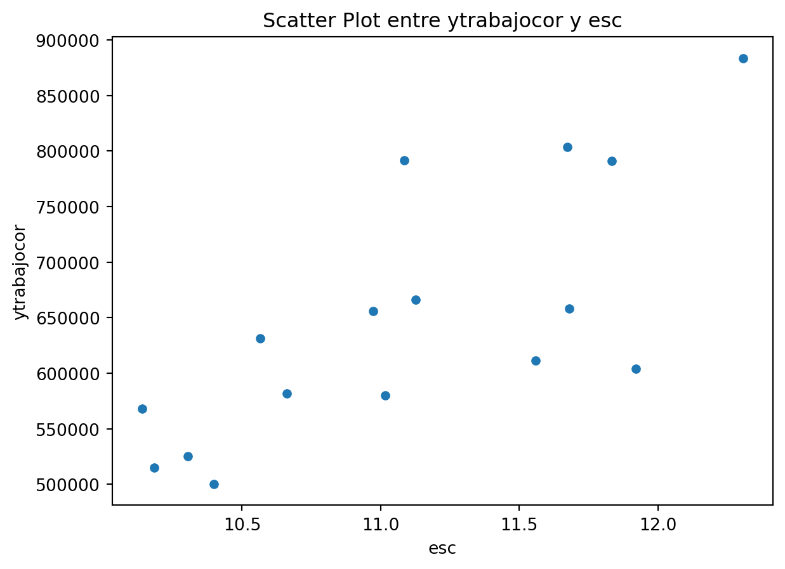
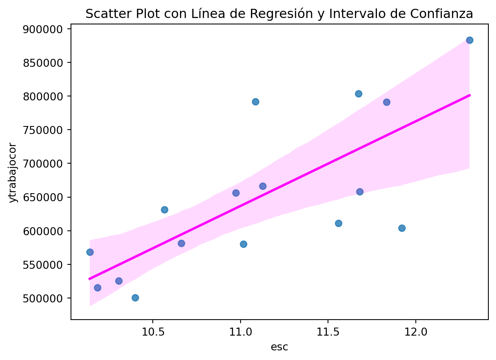
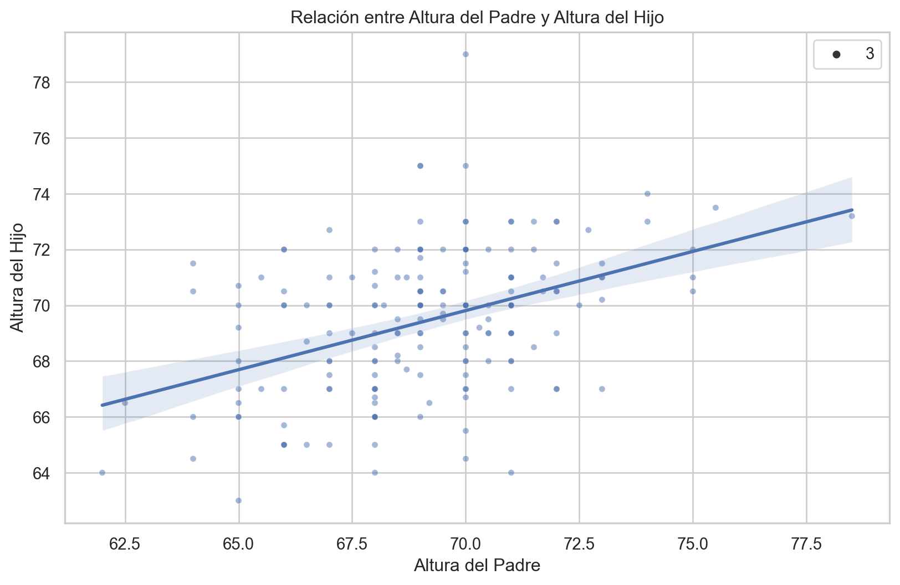
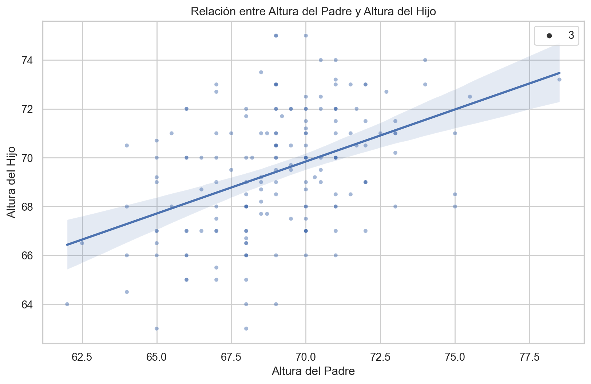
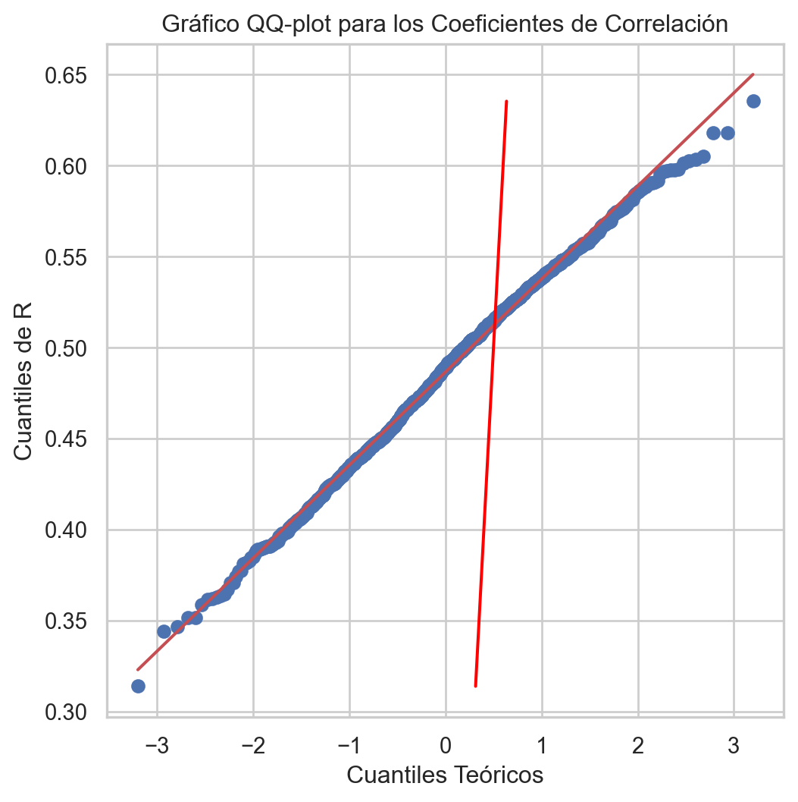
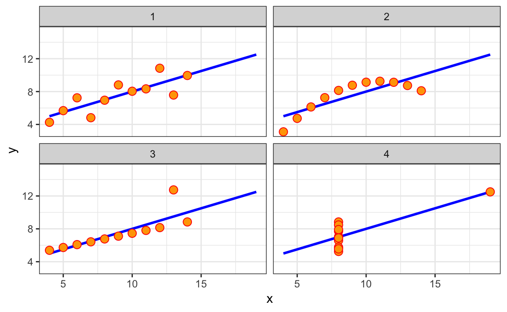
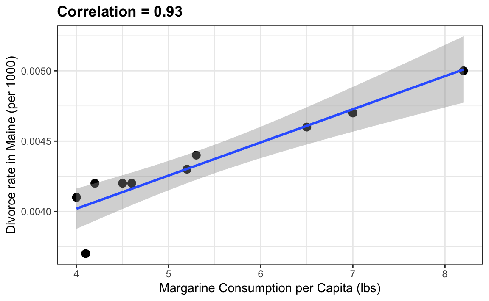
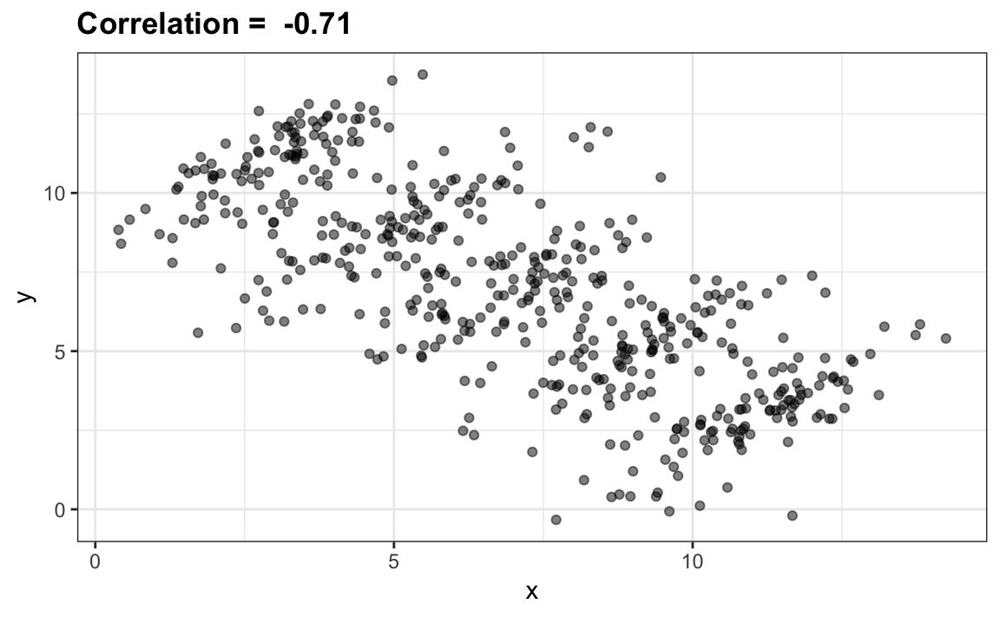
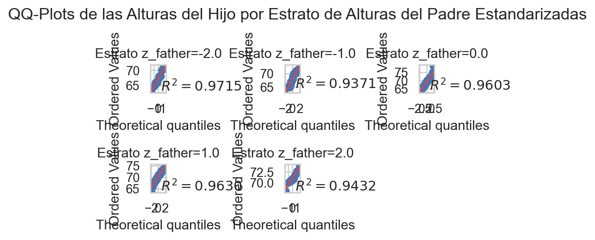

En las aplicaciones de la ciencia de datos, es muy común estar interesado en la relación entre dos o más variables.
El análisis de regresión es una técnica en la cual buscamos encontrar una función que pueda describir la relación observada en los datos entre dos o mas variables.
Por ejemplo, una persona podría querer relacionar los pesos de los individuos con sus alturas…
¿Son los más altos más pesados?
…y¿cuánto más pesados?
Pensemos en el caso más sencillo: una regresión lineal simple o univariada. Tenemos una variable que deseamos explicar o predecir (Y) como función de otra (X).
Para esto, buscamos la pendiente e intercepto de una funciónla recta de la forma:
\[Y = \alpha + \beta X\]
que se ajuste mejor al conjunto de datos con los que se cuenta.
donde \(X\) es la variable explicativa e \(Y\) es la variable dependiente. La pendiente de la recta es \(b\), y \(a\) es la intersección (el valor de \(y\) cuando \(x = 0\)).
Para esto, entendemos que la variable que deseamos entender (Y, variable dependiente) se puede descomponer en dos partes: una que es sistemática o que se puede explicar directamente con una o más variables independientes (Xs o regresores) y otra que es no sistemática o error (\(\mu\) o \(epsilon\)) , que es aquella parte que no se puede explicar y representa a la aleatoriedad del fenómeno.
La parte sistemática entonces la describimos con una forma funcional, que depende de otras variables o regresores.
Esta forma funcional puede ser lineal univariada, lineal múltiple o no lineal. El tipo de forma funcional, definirá el tipo de regresión de la que estemos hablando.
Ventajas del análisis de regersión: es facil describir cuantitaivamente una relación.
Esquemáticamente, los elementos son:

Usos de las regresiones
Las regresiones tienen tres principales usos:
Describir un fenómeno
Probar hipótesis sobre ciertas teorías
Realizar predicciones
Regresión simple y scatterplot
Por ejemplo, pensemos en la relación entre los años de educación y el ingreso de las personas. Este ha sido un tema constante de estudio en diversas disciplinas, especialmente economía.
Podriamos pensar que ambas variables se encuentras relacionadas.
Usemos un subconjunto de datos de la encuesta CASEN 2022.
import pandas as pd# cargamos los datos, es un subconjunto de pregungas, solo mayores de 18 añoscasen_2022 = pd.read_stata("data/small_casen2022.dta")# casen_2022 = pd.read_stata("https://github.com/melanieoyarzun/web_analisisdatos_IDS_S223/blob/main/data/small_casen2022.dta)casen_2022.head()
id_vivienda
folio
id_persona
region
area
nse
expr
tot_per_h
edad
sexo
pco1_a
e3
o6
o8
y1
ytrabajocor
esc
desercion
educ
contrato
0
1000901
100090101
1
Región de Ñuble
Rural
Bajo-medio
43
3
72
2. Mujer
No
2. No
2. No
NaN
NaN
NaN
1.0
NaN
Básica incompleta
NaN
1
1000901
100090101
2
Región de Ñuble
Rural
Bajo-medio
43
3
67
1. Hombre
Sí
2. No
NaN
NaN
NaN
NaN
4.0
NaN
Básica incompleta
NaN
2
1000901
100090101
3
Región de Ñuble
Rural
Bajo-medio
44
3
40
2. Mujer
No
2. No
NaN
NaN
No sabe
411242.0
15.0
NaN
Técnico nivel superior completo
No sabe
3
1000902
100090201
1
Región de Ñuble
Rural
Bajo-medio
51
4
56
1. Hombre
No
2. No
2. No
NaN
NaN
NaN
NaN
NaN
No sabe
NaN
4
1000902
100090201
2
Región de Ñuble
Rural
Bajo-medio
51
4
25
2. Mujer
No
2. No
2. No
NaN
NaN
NaN
12.0
Deserción
Media humanista completa
NaN
Y lo agrparemos por ragion, para facilitar el ejemplo:
import pandas as pd# Supongamos que tienes un DataFrame llamado 'data' con las columnas 'region', 'ytrabajocor', 'esc' y 'desercion'# Agrupar por 'region' y aplicar funciones de agregacióncasen_2022_region = casen_2022.groupby('region').agg({'ytrabajocor': 'mean', 'esc': 'mean'}).reset_index()# Ahora contiene los resultados agregados por regióncasen_2022_region.head()
import matplotlib.pyplot as plt# Suponiendo que casen_2022 es tu DataFrameplt.scatter( casen_2022_region['esc'], casen_2022_region['ytrabajocor'],)plt.ylabel('ytrabajocor')plt.xlabel('esc')plt.title('Scatter Plot entre ytrabajocor y esc (por región)')plt.show()
import seaborn as snsimport matplotlib.pyplot as plt# Suponiendo que casen_2022 es tu DataFramesns.scatterplot(data=casen_2022_region, y='ytrabajocor', x='esc')plt.ylabel('ytrabajocor')plt.xlabel('esc')plt.title('Scatter Plot entre ytrabajocor y esc')plt.show()

import seaborn as snsimport matplotlib.pyplot as plt# Suponiendo que casen_2022 es tu DataFramesns.regplot(data=casen_2022_region, y='ytrabajocor', x='esc', ci=95, line_kws={'color': 'magenta'}) # El argumento ci controla el intervalo de confianzaplt.ylabel('ytrabajocor')plt.xlabel('esc')plt.title('Scatter Plot con Línea de Regresión y Intervalo de Confianza')plt.show()

import seaborn as snsimport matplotlib.pyplot as plt# Suponiendo que casen_2022_region es tu DataFramesns.regplot(data=casen_2022_region, y='ytrabajocor', x='esc', ci=95, line_kws={'color': 'magenta'}) # El argumento ci controla el intervalo de confianza# Procesar y agregar etiquetas de región a los puntosfor i, label inenumerate(casen_2022_region['region']): last_word = label.split()[-1] # Obtener la última palabra de la etiqueta plt.text(casen_2022_region['esc'][i], casen_2022_region['ytrabajocor'][i], last_word, fontsize=8, ha='left', va='bottom')plt.ylabel('ytrabajocor')plt.xlabel('esc')plt.title('Scatter Plot con Línea de Regresión y Etiquetas de Región (Última Palabra)')plt.show()
Podemos ver que se aprecia una relación positiva: a mayor escolaridad promedio, mayor salario promedio por región.
Especificación
Llamamos especifiación al precisar la relación entre las variables que deseamos estimar.
En nuestro caso, la función base que queremos entender es entre salario y educación:
\[ \text{Salario} = f(Educacion))\]
Este es una relación teorica entre variables aleatorias, porque no hemos especificado tres elementos cruciales: - agregar el error aleatorio - especificar una forma funcional - definir una forma de medir las variables en los datos
En nuestro caso, entonces el modelo especificado sería:
El método más comun de estimación es el de los mínimos cuadrados ordinarios. Veremos detalles sobre la estimación, supuestos, propiedades estadísticas la proxima sesión.
Por ahora, pensaremos que es el método que busca la línea que produce menores residuos, es decir, menor diferencia entre evalor predicho (linea de regresión).
\[ \hat{\mu}_i= y_i-\hat{y}_i\]
import seaborn as snsimport matplotlib.pyplot as pltimport numpy as npimport statsmodels.api as sm# Suponiendo que casen_2022_region es tu DataFramesns.set(style='whitegrid') # Configuración del estilo del gráfico# Agregar una columna de constante al DataFramecasen_2022_region['constante'] =1# Crear el gráfico de dispersión con la línea de regresiónsns.regplot(data=casen_2022_region, y='ytrabajocor', x='esc', ci=95, line_kws={'color': 'magenta'}, scatter_kws={'color': 'blue'}) # El argumento ci controla el intervalo de confianza# Ajustar el modelo de regresión linealy = casen_2022_region['ytrabajocor']X = casen_2022_region[['esc', 'constante']] # 'constante' es la columna que agregamos para el término constantemodelo = sm.OLS(y, X).fit()# Calcular las predicciones ('ytrabajocor_pred') a partir del modelocasen_2022_region['ytrabajocor_pred'] = modelo.predict(X)# Agregar líneas que conecten cada punto a la línea de regresiónfor i inrange(len(casen_2022_region)): x_point = casen_2022_region['esc'][i] y_point = casen_2022_region['ytrabajocor'][i] y_pred = casen_2022_region['ytrabajocor_pred'][i] # Usamos las predicciones del modelo# Línea que conecta el punto a la línea de regresión plt.plot([x_point, x_point], [y_point, y_pred], linestyle='--', color='gray')plt.ylabel('ytrabajocor')plt.xlabel('esc')plt.title('Lineas de regresión y residuos')plt.show()
Es decir, minimiza $_{i}^{n} _i $
Modelo estimado
Por ahora, solo estimaremos el modelo directamente usando statsmodels
import pandas as pdimport statsmodels.api as sm# Supongamos que 'casen_2022' contiene las columnas 'ytrabajocor' (variable dependiente) y 'esc' (variable independiente),# y que puedes tener valores NaN en tus datos.# Eliminar filas con valores NaNcasen_2022_clean = casen_2022_region.dropna(subset=['ytrabajocor', 'esc'])# Agregar una columna de constantes para el término constante en el modelocasen_2022_clean['constante'] =1# Definir las variables dependiente e independientey = casen_2022_clean['ytrabajocor']X = casen_2022_clean[['constante', 'esc']] # Usar 'constante' como término constante# Ajustar el modelo de regresión linealmodelo = sm.OLS(y, X).fit()# Imprimir un resumen del modeloprint(modelo.summary())
/Users/melita/anaconda3/lib/python3.10/site-packages/scipy/stats/_stats_py.py:1736: UserWarning:
kurtosistest only valid for n>=20 ... continuing anyway, n=16
import pandas as pdimport statsmodels.api as sm# Supongamos que 'casen_2022' contiene las columnas 'ytrabajocor' (variable dependiente) y 'esc' (variable independiente),# y que puedes tener valores NaN en tus datos.# Eliminar filas con valores NaNcasen_2022_clean = casen_2022.dropna(subset=['ytrabajocor', 'esc'])# Agregar una columna de constantes para el término constante en el modelocasen_2022_clean['constante'] =1# Definir las variables dependiente e independientey = casen_2022_clean['ytrabajocor']X = casen_2022_clean[['constante', 'esc']] # Usar 'constante' como término constante# Ajustar el modelo de regresión linealmodelo = sm.OLS(y, X).fit()# Imprimir un resumen del modeloprint(modelo.summary())
/var/folders/ry/0yrdh5kn1m92t_pmx56nnqkc0000gn/T/ipykernel_44373/626282569.py:11: SettingWithCopyWarning:
A value is trying to be set on a copy of a slice from a DataFrame.
Try using .loc[row_indexer,col_indexer] = value instead
See the caveats in the documentation: https://pandas.pydata.org/pandas-docs/stable/user_guide/indexing.html#returning-a-view-versus-a-copy
Podemos ver que un año adicional de educación ase asocia con 126.000/77.000 app pesos mensuales, el resto constante.
¿y la constante, como la podemos interpretar?
Modelos simples y múltiples
Muchas veces una sola variable no es suficiente para describir bien un fenómeno. Necesitamos incluir más variables.
Esto puede ser: - Una nueva variable - Una forma funcional no lineal de la variable ya incluida
Nuestra interpretación del modelo no cambia, solo que ahora efectivamente estamos controlando por otros factores.
Probemos, agregar edad al modelo:
import pandas as pdimport statsmodels.api as sm# Supongamos que 'casen_2022' contiene las columnas 'ytrabajocor' (variable dependiente) y 'esc' (variable independiente),# y que puedes tener valores NaN en tus datos.# Eliminar filas con valores NaNcasen_2022_clean = casen_2022.dropna(subset=['ytrabajocor', 'esc', 'edad'])# Agregar una columna de constantes para el término constante en el modelocasen_2022_clean['constante'] =1# Definir las variables dependiente e independientey = casen_2022_clean['ytrabajocor']X = casen_2022_clean[['constante', 'esc', 'edad']] # Usar 'constante' como término constante# Ajustar el modelo de regresión linealmodelo = sm.OLS(y, X).fit()# Imprimir un resumen del modeloprint(modelo.summary())
/var/folders/ry/0yrdh5kn1m92t_pmx56nnqkc0000gn/T/ipykernel_44373/2633333245.py:11: SettingWithCopyWarning:
A value is trying to be set on a copy of a slice from a DataFrame.
Try using .loc[row_indexer,col_indexer] = value instead
See the caveats in the documentation: https://pandas.pydata.org/pandas-docs/stable/user_guide/indexing.html#returning-a-view-versus-a-copy
Es muy usual, agregar edad al cuadrado…. para representar que los salarios crecen con la edad hasta cierto punto, y luego empieza a decaer…
import pandas as pdimport statsmodels.api as sm# Supongamos que 'casen_2022' contiene las columnas 'ytrabajocor' (variable dependiente), 'esc' (variable independiente),# 'edad' (variable independiente) y puedes tener valores NaN en tus datos.# Eliminar filas con valores NaNcasen_2022_clean = casen_2022.dropna(subset=['ytrabajocor', 'esc', 'edad'])# Agregar una columna de constantes para el término constante en el modelocasen_2022_clean['constante'] =1# Agregar una columna con 'edad' al cuadradocasen_2022_clean['edad_cuadrado'] = casen_2022_clean['edad'] **2# Definir las variables dependiente e independientey = casen_2022_clean['ytrabajocor']X = casen_2022_clean[['constante', 'esc', 'edad', 'edad_cuadrado']] # Incluye 'edad_cuadrado'# Ajustar el modelo de regresión linealmodelo = sm.OLS(y, X).fit()# Imprimir un resumen del modeloprint(modelo.summary())
/var/folders/ry/0yrdh5kn1m92t_pmx56nnqkc0000gn/T/ipykernel_44373/847230214.py:11: SettingWithCopyWarning:
A value is trying to be set on a copy of a slice from a DataFrame.
Try using .loc[row_indexer,col_indexer] = value instead
See the caveats in the documentation: https://pandas.pydata.org/pandas-docs/stable/user_guide/indexing.html#returning-a-view-versus-a-copy
/var/folders/ry/0yrdh5kn1m92t_pmx56nnqkc0000gn/T/ipykernel_44373/847230214.py:14: SettingWithCopyWarning:
A value is trying to be set on a copy of a slice from a DataFrame.
Try using .loc[row_indexer,col_indexer] = value instead
See the caveats in the documentation: https://pandas.pydata.org/pandas-docs/stable/user_guide/indexing.html#returning-a-view-versus-a-copy
OLS Regression Results
==============================================================================
Dep. Variable: ytrabajocor R-squared: 0.157
Model: OLS Adj. R-squared: 0.157
Method: Least Squares F-statistic: 5454.
Date: Sat, 09 Sep 2023 Prob (F-statistic): 0.00
Time: 11:34:48 Log-Likelihood: -1.3142e+06
No. Observations: 87910 AIC: 2.628e+06
Df Residuals: 87906 BIC: 2.628e+06
Df Model: 3
Covariance Type: nonrobust
=================================================================================
coef std err t P>|t| [0.025 0.975]
---------------------------------------------------------------------------------
constante -1.273e+06 2.46e+04 -51.789 0.000 -1.32e+06 -1.23e+06
esc 8.514e+04 712.733 119.463 0.000 8.37e+04 8.65e+04
edad 3.529e+04 1045.445 33.754 0.000 3.32e+04 3.73e+04
edad_cuadrado -302.7647 11.234 -26.950 0.000 -324.784 -280.746
==============================================================================
Omnibus: 166354.248 Durbin-Watson: 1.665
Prob(Omnibus): 0.000 Jarque-Bera (JB): 1155260651.345
Skew: 14.028 Prob(JB): 0.00
Kurtosis: 563.898 Cond. No. 2.46e+04
==============================================================================
Notes:
[1] Standard Errors assume that the covariance matrix of the errors is correctly specified.
[2] The condition number is large, 2.46e+04. This might indicate that there are
strong multicollinearity or other numerical problems.
Un poco más sobre interpretación
Los principales elementos que hay que interpretar en un modelo de regresión lineal son los coeficientes de los predictores:
\(\beta_0\) es la ordenada en el origen o intercept, se corresponde con el valor esperado de la variable respuesta \(y\), cuando todos los predictores son cero.
\(\beta_j\) los coeficientes de regresión parcial de cada predictor indican el cambio promedio esperado de la variable respuesta 𝑦 al incrementar en una unidad de la variable predictora \(x_j\), manteniéndose constantes el resto de variables. (“Ceteris paribus”))
La magnitud de cada coeficiente parcial de regresión depende de las unidades en las que se mida la variable predictora a la que corresponde, por lo que su magnitud no está asociada con la importancia de cada predictor.
Para poder determinar qué impacto tienen en el modelo cada una de las variables, se emplean los coeficientes parciales estandarizados, que se obtienen al estandarizar (sustraer la media y dividir entre la desviación estándar) las variables predictoras previo ajuste del modelo. En este caso, \(\beta_0\) se corresponde con el valor esperado de la variable respuesta cuando todos los predictores se encuentran en su valor promedio, y \(\beta_j\) el cambio promedio esperado de la variable respuesta al incrementar en una desviación estándar la variable predictora \(x_j\), manteniéndose constantes el resto de variables.
Si bien los coeficientes de regresión suelen ser el primer objetivo de la interpretación de un modelo lineal, existen muchos otros aspectos (significancia del modelo en su conjunto, significancia de los predictores, condición de normalidad…etc.). Estos últimos suelen ser tratados con poco detalle cuando el único objetivo del modelo es realizar predicciones, sin embargo, son muy relevantes si se quiere realizar inferencia, es decir, explicar las relaciones entre los predictores y la variable respuesta.
Causalidad, regresión y correlación
Importante tener en cuenta
Antes de intentar ajustar un modelo lineal a los datos observados, la persona debe determinar primero si existe o no una relación entre las variables de interés. Esto no implica necesariamente que una variable cause la otra (por ejemplo, puntajes más altos en la PSU no causan calificaciones superiores en la universidad), pero existe alguna asociación significativa entre las dos variables.
Un diagrama de dispersión puede ser una herramienta útil para determinar la fuerza de la relación entre dos variables. Si parece no haber asociación entre las variables explicativas y dependiente propuestas (es decir, el diagrama de dispersión no indica ninguna tendencia creciente o decreciente), entonces ajustar un modelo de regresión lineal a los datos probablemente no proporcionará un modelo útil.
Una valiosa medida numérica de asociación entre dos variables es el coeficiente de correlación, que es un valor entre -1 y 1 que indica la fuerza de la asociación de los datos observados para las dos variables.
Una perspectiva histórica:
EL origen de la técnica, podemos remontarlo a la genética.
Francis Galton estudió la variación y la herencia de los rasgos humanos. Entre muchos otros rasgos, Galton recolectó y estudió datos de altura de familias para tratar de entender la herencia. Mientras hacía esto, desarrolló los conceptos de correlación y regresión.
Por supuesto, en el momento en que se recogieron estos datos, nuestro conocimiento de la genética era bastante limitado en comparación con lo que conocemos hoy en día. Una pregunta muy específica que Galton trató de responder fue:
¿qué tan bien podemos predecir la estatura de un niño basado en la estatura de los padres?
La técnica que desarrolló para responder a esta pregunta, la regresión, también puede aplicarse en muchas otras circunstancias.
Nota histórica: Galton hizo importantes contribuciones a la estadística y la genética, pero también fue uno de los primeros defensores de la eugenesia, un movimiento filosófico científicamente defectuoso favorecido por muchos biólogos de la época de Galton pero con terribles consecuencias históricas.
Estudio de caso: ¿es hereditaria la altura?
Tenemos acceso a los datos de altura de familias recolectado por Galton, a través del paquete HistData. Estos datos contienen las alturas de varias docenas de familias: madres, padres, hijas e hijos.
# Cargamos los paquetes que vamos a usarimport statsmodels.api as smimport pandas as pdimport numpy as npimport seaborn as sns# Si no tiene stats models, instalar: pip install statsmodels# Cargar el conjunto de datos GaltonFamiliesgalton_data = sm.datasets.get_rdataset("GaltonFamilies", package="HistData").data# Mostrar las primeras filas del DataFramegalton_data.head(4)
family
father
mother
midparentHeight
children
childNum
gender
childHeight
0
001
78.5
67.0
75.43
4
1
male
73.2
1
001
78.5
67.0
75.43
4
2
female
69.2
2
001
78.5
67.0
75.43
4
3
female
69.0
3
001
78.5
67.0
75.43
4
4
female
69.0
Para imitar el análisis de Galton, crearemos un conjunto de datos con las alturas de los padres y un hijo de cada familia seleccionado al azar:
# Filtrar por género masculino y seleccionar una muestra de una altura de hijo por familiagalton_heights = galton_data[galton_data['gender'] =='male']\ .groupby('family')\ .apply(lambda group: group.sample(n=1))\ .reset_index(drop=True)\ .loc[:, ['father', 'childHeight']]\ .rename(columns={'childHeight': 'son'})galton_heights.head(4)
father
son
0
78.5
73.2
1
75.5
73.5
2
75.0
71.0
3
75.0
68.5
En los ejercicios, examinaremos otras relaciones, incluidas las de madres e hijas.
Supongamos que se nos pidiera que resumiéramos (describieramos) los datos de padres e hijos. Dado que ambas distribuciones están bien aproximadas por la distribución normal, podríamos usar los dos promedios y dos desviaciones estándar como resúmenes:
Sin embargo, este resumen no describe una característica importante de los datos: la tendencia de que cuanto más alto es el padre, más alto es el hijo.
import pandas as pdimport statsmodels.api as smimport matplotlib.pyplot as pltimport seaborn as sns# Configurar el tamaño de la figuraplt.figure(figsize=(10, 6))# Cargar el conjunto de datos GaltonFamiliesgalton_data = sm.datasets.get_rdataset("GaltonFamilies", package="HistData").data# Filtrar por género masculino y seleccionar una muestra de una altura de hijo por familiagalton_heights = galton_data[galton_data['gender'] =='male']\ .groupby('family')\ .apply(lambda group: group.sample(n=1))\ .reset_index(drop=True)\ .loc[:, ['father', 'childHeight']]\ .rename(columns={'childHeight': 'son'})# Crear el gráfico de dispersión con línea de regresiónsns.set(style="whitegrid")sns.scatterplot(data=galton_heights, x='father', y='son', alpha=0.5, size=3)sns.regplot(data=galton_heights, x='father', y='son', scatter=False)plt.xlabel("Altura del Padre")plt.ylabel("Altura del Hijo")plt.title("Relación entre Altura del Padre y Altura del Hijo")# Mostrar el gráficoplt.show()

Aprenderemos que el coeficiente de correlación es un resumen informativo de cómo dos variables se mueven juntas y luego veremos cómo esto puede ser usado para predecir una variable usando la otra, en una regresión.
Taller de aplicación 2: Caso aplicación: Cursos de Verano
Taller de aplicación 2: Pregunta 1
Considere los datos trabajados en el taller 1, sobre los cursos de verano. Recordemos la pregunta que queríamos responder:
Asistir a cursos de verano mejora los resultados académicos?
Plantee un modelo de regresión que con los datos disponibles quisieramos estimar.
Grafique la dispersión y la recta de regresión estimada.
Estime el modelo simple e interprete
¿Regresión?… pero ¿Y la correlación?
Ambos están muy relacionados.
Aprenderemos que el coeficiente de correlación es un resumen informativo de cómo dos variables se mueven juntas…
y luego veremos cómo esto puede ser usado para predecir una variable usando la otra y modelado en una regresión

El coeficiente de correlación
El coeficiente de correlación se define para una lista de pares \((x_1,y_1),...(x_n,y_n)\) como la media de los productos de los valores normalizados:
Dónde \(\mu\) son promedios y \(\sigma\) son desviaciones estándar. La letra griega para r, \(\rho\) se utiliza comúnmente en los libros de estadística para denotar la correlación, porque es la primera letra de regresión. Pronto aprenderemos sobre la conexión entre correlación y regresión.
Podemos representar la fórmula anterior con el código usando:
Podemos representar la fórmula anterior con el siguiente código usando:
import numpy as npx = np.array([1, 2, 3, 4, 5]) # Tu arreglo x aquíy = np.array([6, 7, 8, 9, 10]) # Tu arreglo y aquírho = np.mean((x - np.mean(x)) * (y - np.mean(y))) / (np.std(x) * np.std(y))print(rho)
0.9999999999999998
La correlación entre las alturas del padre y del hijo es de aproximadamente \(0,4\):
import statsmodels.api as smimport matplotlib.pyplot as pltfrom sklearn.preprocessing import StandardScaler# Cargar el conjunto de datos GaltonFamiliesgalton_data = sm.datasets.get_rdataset("GaltonFamilies", package="HistData").data# Filtrar por género masculino y seleccionar una muestra de una altura de hijo por familiagalton_heights = galton_data[galton_data['gender'] =='male']\ .groupby('family')\ .apply(lambda group: group.sample(n=1))\ .reset_index(drop=True)\ .loc[:, ['father', 'childHeight']]\ .rename(columns={'childHeight': 'son'})# Calcular la media y la desviación estándar de la altura del padremean_scaled_father = StandardScaler().fit_transform(galton_heights[['father']]).mean()sd_scaled_father = StandardScaler().fit_transform(galton_heights[['father']]).std()mean_father = galton_heights['father'].mean()sd_father = galton_heights['father'].std()print("Media de la Altura del Padre (Estandarizada):", mean_scaled_father)print("Desviación Estándar de la Altura del Padre (Estandarizada):", sd_scaled_father)print("Media de la Altura del Padre:", mean_father)print("Desviación Estándar de la Altura del Padre:", sd_father)# Crear el gráfico de dispersiónplt.scatter(galton_heights['father'], StandardScaler().fit_transform(galton_heights[['father']]))plt.xlabel("Altura del Padre")plt.ylabel("Altura del Padre Estandarizada")plt.title("Relación entre Altura del Padre y Altura del Padre Estandarizada")plt.show()
Media de la Altura del Padre (Estandarizada): 4.6046344887246715e-15
Desviación Estándar de la Altura del Padre (Estandarizada): 1.0
Media de la Altura del Padre: 69.09888268156423
Desviación Estándar de la Altura del Padre: 2.546555038637643
La correlación entre las alturas del padre y del hijo es de aproximadamente \(0,4\).
correlation_coefficient = galton_heights[['father', 'son']].corr().iloc[0, 1]print("Coeficiente de Correlación:", correlation_coefficient)
Coeficiente de Correlación: 0.47124572357217576
import pandas as pd# Generar datos simulados usando la biblioteca fauxdat = pd.DataFrame(np.random.multivariate_normal([0, 0, 0, 0, 0, 0], np.diag([1, 1, 1, 1, 1, 1]), size=100), columns=["A", "B", "C", "D", "E", "F"])print(dat)# Calcular la correlación entre father y son usando una muestra de galton_heightsR = galton_heights.sample(n=75, replace=True).corr().loc["father", "son"]print(R)
Para ver cómo se ven los datos para los diferentes valores de \(\rho\) aquí hay seis ejemplos de pares con correlaciones que van de -0,9 a 0,99:
image
La correlación de la muestra es una variable aleatoria
Antes de continuar conectando la correlación con la regresión, recordemos la variabilidad aleatoria.
En la mayoría de las aplicaciones de la ciencia de datos, observamos datos que incluyen variación aleatoria.
Por ejemplo, en muchos casos, no se observan datos para toda la población de interés, sino para una muestra aleatoria. Al igual que con el promedio y la desviación estándar, la correlación de la muestra es la estimación más comúnmente utilizada de la correlación de la población. Esto implica que la correlación que calculamos y usamos como resumen es una variable aleatoria.
A modo de ejemplo, supongamos que las 179 parejas de padres e hijos son toda nuestra población. Un genetista menos afortunado sólo puede costear las mediciones de una muestra aleatoria de 25 pares. La correlación de la muestra se puede calcular con:
import pandas as pd# Seleccionar una muestra aleatoria de tamaño 75 con reemplazoR = galton_heights.sample(n=75, replace=True)# Calcular el coeficiente de correlación entre las columnas "father" y "son"correlation_coefficient = R[['father', 'son']].corr().iloc[0, 1]print("Coeficiente de Correlación en la Muestra:", correlation_coefficient)
Coeficiente de Correlación en la Muestra: 0.6227104505707883
R es una variable aleatoria. Podemos ejecutar una simulación de Monte Carlo para ver su distribución:
Nota: el objetivo principal de la simulación de Montecarlo es intentar imitar el comportamiento de variables reales para, en la medida de lo posible, analizar o predecir cómo van a evolucionar.
import pandas as pdimport numpy as npimport matplotlib.pyplot as pltB =1000N =100R = np.zeros(B)for i inrange(B): sample = galton_heights.sample(n=N, replace=False) correlation_coefficient = sample[['father', 'son']].corr().iloc[0, 1] R[i] = correlation_coefficient# Crear un histograma de los coeficientes de correlaciónplt.hist(R, bins=np.arange(-1, 1.1, 0.05), color='black')plt.xlabel("Coeficiente de Correlación")plt.ylabel("Frecuencia")plt.title("Histograma de Coeficientes de Correlación")plt.show()
Vemos que el valor esperado de R es la correlación de la población:
mean_R = np.mean(R)print("Media de Coeficientes de Correlación:", mean_R)
Media de Coeficientes de Correlación: 0.4744780432053108
y que tiene un error estándar relativamente alto en relación con el rango de valores que puede tomar R:
sd_R = np.std(R)print("Desviación Estándar de Coeficientes de Correlación:", sd_R)
Desviación Estándar de Coeficientes de Correlación: 0.050508315029364606
Por lo tanto, al interpretar las correlaciones, recuerde que las correlaciones derivadas de las muestras son estimaciones que contienen incertidumbre.
Además, tenga en cuenta que debido a que la correlación de la muestra es un promedio de extracciones independientes, el teorema del límite central realmente funciona. Por lo tanto, para \(N\) lo suficientemente grande la distribución de \(R\) es aproximadamente normal con el valor esperado \(\rho\). La desviación estándar, que es algo compleja de derivar, es: \(\sqrt{\frac{1-r^2}{N-2}}\).
En nuestro ejemplo, \(N=25\) no parece ser lo suficientemente grande para que la aproximación sea buena:
Nota: El gráfico Q-Q, o gráfico cuantitativo, es una herramienta gráfica que nos ayuda a evaluar si un conjunto de datos proviene plausiblemente de alguna distribución teórica como una Normal o exponencial. Por ejemplo, si realizamos un análisis estadístico que asume que nuestra variable dependiente está Normalmente distribuida, podemos usar un gráfico Q-Q-Normal para verificar esa suposición. https://data.library.virginia.edu/understanding-q-q-plots/
import pandas as pdimport numpy as npimport matplotlib.pyplot as pltimport scipy.stats as stats# Crear un DataFrame con los coeficientes de correlacióndf_R = pd.DataFrame({'R': R})# Calcular la media y el tamaño de la muestramean_R = np.mean(R)N =len(R)# Crear el gráfico QQ-plotplt.figure(figsize=(6, 6))stats.probplot(df_R['R'], dist='norm', plot=plt)plt.xlabel("Cuantiles Teóricos")plt.ylabel("Cuantiles de R")plt.title("Gráfico QQ-plot para los Coeficientes de Correlación")plt.plot([np.min(R), np.max(R)], [np.min(R), np.max(R)], color='red') # Línea de referenciaplt.show()

Si N aumenta verás que la distribución converge a una normal.
La correlación no siempre es un resumen útil
La correlación no siempre es un buen resumen de la relación entre dos variables. Los siguientes cuatro conjuntos de datos artificiales, conocidos como el cuarteto de Anscombe, ilustran este punto. Todos estos pares tienen una correlación de 0,82:

image
La correlación sólo tiene sentido en un contexto particular. Para ayudarnos a entender cuándo es que la correlación es significativa como estadística de resumen, volveremos al ejemplo de predecir la estatura del hijo usando la estatura del padre. Esto ayudará a motivar y definir la regresión lineal. Comenzamos demostrando cómo la correlación puede ser útil para la predicción.
Correlación no es causalidad
La asociación no es causalidad es quizás la lección más importante que se aprende en una clase de estadística. Hay muchas razones por las que una variable \(X\) puede correlacionarse con una variable \(Y\) sin tener ningún efecto directo sobre \(Y\). Aquí examinamos tres maneras comunes que pueden llevar a una mala interpretación de los datos.
Correlación espuria
El siguiente ejemplo cómico subraya que la correlación no es causalidad. Muestra una fuerte correlación entre las tasas de divorcio y el consumo de margarina.

image
(Acá pueden encontrar más http://tylervigen.com/old-version.html)
¿Significa esto que la margarina causa divorcios? ¿O los divorcios hacen que la gente coma más margarina? Por supuesto que la respuesta a estas dos preguntas es no. Esto es sólo un ejemplo de lo que llamamos una correlación espuria.
Los casos presentados en el sitio de correlación espuria son todos casos de lo que generalmente se denomina dragado de datos (data dredging), pesca de datos (data fishing) o espionaje de datos (data snooping). Es básicamente una forma de lo que en los EE.UU. se llama “cherry picking”. Un ejemplo de dragado de datos sería si miras a través de muchos resultados producidos por un proceso aleatorio y escoges el que muestra una relación que apoya una teoría que se quiere defender.
La paradoja de Simpson
Se llama paradoja porque vemos el signo de la correlación cambiar cuando comparamos toda la data y estratos específicos. Como ejemplo ilustrativo, supongamos que tiene tres variables aleatorias \(X\), \(Y\) y \(Z\) y que observamos realizaciones de estas. Aquí está el gráfico de observaciones simuladas para \(X\) y \(Y\) a lo largo de la correlación de la muestra:

Puedes ver que \(X\) e \(Y\) están negativamente correlacionados. Sin embargo, una vez que estratificamos por \(Z\) (mostrado en diferentes colores abajo) emerge otro patrón:
Es realmente \(Z\) que está negativamente correlacionado con \(X\). Si estratificamos por \(Z\) las variables \(X\) e \(Y\) están en realidad correlacionados positivamente como se ha visto en el gráfico anterior.
Expectativas condicionales
Supongamos que nos piden que adivinemos la altura de un hijo seleccionado al azar y no sabemos la altura de su padre. Debido a que la distribución de las alturas de los hijos es aproximadamente normal, sabemos que la altura media, \(69.2\), es el valor con la mayor proporción y sería la predicción con mayores posibilidades de minimizar el error. Pero, ¿y si nos dicen que el padre es más alto que el promedio, digamos que mide 72 pulgadas de alto, todavía esperaríamos que la altura más probable del hijo sea 69.2 pulgadas?
Resulta que si pudiéramos recolectar datos de un gran número de padres que miden 72 pulgadas, la distribución de las alturas de sus hijos sería normalmente distribuida. Esto implica que el promedio de la distribución calculada en este subconjunto sería nuestra mejor predicción.
En general, llamamos a este enfoque condicional. La idea general es que estratificamos una población en grupos y calculamos resúmenes en cada grupo. Por lo tanto, el condicionamiento está relacionado con el concepto de estratificación descrito.
Para proporcionar una descripción matemática del condicionamiento, considere que tenemos una población de pares de valores \((x_1,y_1),...,(x_n,y_n)\), por ejemplo, todas las alturas de padre e hijo en Inglaterra. Sabemos que si se toma un par al azar \((X,Y)\) el valor esperado y el mejor predictor de \(Y\) es \(E(Y)=\mu_y\), el promedio de la población: \(1/n \sum_{i=y}^{n}y_i\). Sin embargo, ya no estamos interesados en la población en general, sino sólo en el subconjunto de la población con un valor específico, \(72\) pulgadas. Este subconjunto de la población, es también una población y por lo tanto se aplican los mismos principios y propiedades que hemos aprendido. El \(y_i\) en la subpoblación tienen una distribución, denominada distribución condicional, y esta distribución tiene un valor esperado, denominado expectativa condicional. En nuestro ejemplo, la expectativa condicional es la estatura promedio de todos los hijos en Inglaterra con padres de 72 pulgadas. La notación estadística es para la expectativa condicional es:
\[\begin{equation}
E(Y|X=x)
\end{equation}\]
con \(x\) representando el valor fijo que define ese subconjunto, por ejemplo 72 pulgadas. Del mismo modo, se indica la desviación estándar de los estratos con:
Porque la expectativa condicional \(E(Y|X=x)\) es el mejor predictor para la variable aleatoria \(Y\) para un individuo en los estratos definidos por \(X=x\) muchos de los desafíos de la ciencia de datos se reducen a la estimación de esta cantidad. La desviación estándar condicional cuantifica la precisión de la predicción.
En el ejemplo que hemos estado considerando, estamos interesados en calcular la altura promedio del hijo condicionada a que el padre tenga 72 pulgadas de altura. Queremos estimar \(E(Y|X=72)\) usando la muestra recolectada por Galton.
Anteriormente aprendimos que el promedio de la muestra es el enfoque preferido para estimar el promedio de la población. Sin embargo, un desafío al usar este enfoque para estimar las expectativas condicionales es que para los datos continuos no tenemos muchos puntos de datos que coincidan exactamente con un valor de nuestra muestra. Por ejemplo, sólo tenemos:
count_72 = (galton_heights['father'] ==72).sum()print("Cantidad de registros con valor 72 en la columna 'father':", count_72)
Cantidad de registros con valor 72 en la columna 'father': 8
padres que miden exactamente 72 pulgadas. Si cambiamos el número a 72.5, obtenemos aún menos puntos de datos:
count_725 = (galton_heights['father'] ==72.5).sum()print("Cantidad de registros con valor 72.5 en la columna 'father':", count_725)
Cantidad de registros con valor 72.5 en la columna 'father': 1
Una forma práctica de mejorar estas estimaciones de las expectativas condicionales, es definir estratos con valores similares de \(x\). En nuestro ejemplo, podemos redondear las alturas paternas a la pulgada más cercana y asumir que todas son de 72 pulgadas. Si hacemos esto, terminamos con la siguiente predicción para el hijo de un padre que mide 72 pulgadas de alto:
conditional_avg = galton_heights[galton_heights['father'].round() ==72]['son'].mean()print("Promedio condicional para father == 72:", conditional_avg)
Promedio condicional para father == 72: 71.03571428571429
En este código, filtramos el DataFrame “galton_heights” para obtener las filas donde el valor redondeado de “father” es igual a 72. Luego, calculamos el promedio de la columna “son” en las filas filtradas y almacenamos el resultado en la variable “conditional_avg”. Finalmente, imprimimos el promedio condicional calculado.
Note que un padre de 72 pulgadas es más alto que el promedio – específicamente, 72 - 69.1/2.5 = 1.1 desviaciones estándar más alto que el padre promedio. Nuestra predicción, \(70.5\), es también más alta que el promedio, pero sólo \(0.49\) desviaciones estándar más grandes que el hijo promedio. Los hijos de padres de 72 pulgadas han regresado algunos a la estatura promedio. Observamos que la reducción en el número de SD más altas es de alrededor de \(0.5\), lo que resulta ser la correlación. Como veremos en una sección posterior, esto no es una coincidencia.
Si queremos hacer una predicción de cualquier altura, no sólo de 72, podríamos aplicar el mismo enfoque a cada estrato. La estratificación seguida de los boxplots nos permite ver la distribución de cada grupo:
import pandas as pdimport seaborn as snsimport matplotlib.pyplot as plt# Supongamos que tienes un DataFrame llamado 'galton_heights' con las columnas 'father' y 'son'.# Crear una nueva columna 'father_strata' con los valores redondeados de 'father'galton_heights['father_strata'] = galton_heights['father'].round().astype(int)# Crear el gráfico de boxplotsplt.figure(figsize=(10, 6)) # Tamaño del gráficosns.boxplot(data=galton_heights, x='father_strata', y='son')# Agregar puntos para mostrar las medias condicionadassns.swarmplot(data=galton_heights, x='father_strata', y='son', color='black', size=4)plt.xlabel('father_strata')plt.ylabel('son')plt.title('Boxplots de son condicionado por father_strata con Medias Condicionadas')plt.xticks(rotation=45) # Rotar etiquetas del eje x si es necesarioplt.show()
No es de extrañar que los centros de los grupos aumenten con la altura.
import pandas as pdimport matplotlib.pyplot as plt# Redondear los valores de la columna "father"galton_heights['father'] = galton_heights['father'].round()# Calcular el promedio condicional de "son" para cada valor de "father"conditional_avg_by_father = galton_heights.groupby('father')['son'].mean().reset_index()# Crear un gráfico de puntos para mostrar el promedio condicional por "father"plt.figure(figsize=(10, 6))plt.scatter(conditional_avg_by_father['father'], conditional_avg_by_father['son'], color='blue')plt.xlabel("Father Height")plt.ylabel("Conditional Son Height Average")plt.title("Promedio Condicional de Alturas de Hijos por Altura de Padres")plt.show()
Además, estos centros parecen seguir una relación lineal. A continuación se presentan los promedios de cada grupo. Si tenemos en cuenta que estos promedios son variables aleatorias con errores estándar, los datos son consistentes con estos puntos siguiendo una línea recta:
import pandas as pdimport matplotlib.pyplot as pltimport seaborn as sns# Redondear los valores de la columna "father"galton_heights['father'] = galton_heights['father'].round()# Calcular el promedio condicional de "son" para cada valor de "father"conditional_avg_by_father = galton_heights.groupby('father')['son'].mean().reset_index()conditional_avg_by_father.head()# Crear un gráfico de puntos con ajuste de regresión linealplt.figure(figsize=(10, 6))sns.scatterplot(x='father', y='son', data=conditional_avg_by_father, color='blue')sns.regplot(x='father', y='son', data=conditional_avg_by_father, scatter=False, color='orange')plt.xlabel("Father Height")plt.ylabel("Conditional Son Height Average")plt.title("Promedio Condicional de Alturas de Hijos por Altura de Padres con Regresión Lineal")plt.show()
El hecho de que estos promedios condicionales sigan una línea no es una coincidencia. En la siguiente sección, explicamos que la línea que siguen estos promedios es lo que llamamos la línea de regresión, que mejora la precisión de nuestras estimaciones. Sin embargo, no siempre es apropiado estimar las expectativas condicionales con la línea de regresión, por lo que también describimos la justificación teórica de Galton para usar la línea de regresión.
La línea de regresión
Si estamos prediciendo una variable aleatoria \(Y\) conociendo el valor de otra variable \(X=x\) usando una línea de regresión, entonces predecimos que para cada desviación estándar, \(\sigma_x\) que \(x\) aumenta por encima de la media \(\mu_x\), \(Y\) incrementa \(\rho\) veces la desviación estándar \(\sigma_Y\) sobre el promedio \(\mu_Y\), con \(\rho\) la correlación entre \(X\) e \(Y\). Por lo tanto, la formula de la regresión es:
Si existe una correlación perfecta, la línea de regresión predice un aumento que corresponde al mismo número de desviacones estándar. Si hay correlación 0, entonces no usamos \(x\) en absoluto en la predicción y simplemente predecimos el promedio \(\mu_Y\). Para valores entre 0 y 1, la predicción se encuentra en un punto intermedio. Si la correlación es negativa, predecimos una reducción en lugar de un aumento.
Nótese que si la correlación es positiva e inferior a 1, nuestra predicción está más cerca (en unidades estándar) de la altura media que de lo que el valor utilizado para predecir, \(x\), está del promedio de los \(x\). Por eso lo llamamos regresión: el hijo regresa a la estatura media. De hecho, el título del artículo de Galton era: Regresión a la mediocridad en la estatura hereditaria (Regression toward mediocrity in hereditary stature.).
Para añadir líneas de regresión a los gráficos, necesitaremos la fórmula anterior en la forma: \(y=b+mx\), con pendiente \(m=\rho \sigma_y / \sigma_x\) e intercepto \(b=\mu_y - m \mu_x\)
Aquí agregamos la línea de regresión a la data original.
import pandas as pdimport numpy as npimport matplotlib.pyplot as pltimport seaborn as sns# Cálculo de las medias y desviaciones estándarmu_x = galton_heights['father'].mean()mu_y = galton_heights['son'].mean()s_x = galton_heights['father'].std()s_y = galton_heights['son'].std()# Cálculo del coeficiente de correlaciónr = galton_heights['father'].corr(galton_heights['son'])# Cálculo de la pendiente y el intercepto para la línea de regresiónm = r * s_y / s_xb = mu_y - m * mu_x# Configuración del tamaño de la figuraplt.figure(figsize=(10, 6))# Crear un gráfico de dispersión con línea de regresiónsns.scatterplot(x='father', y='son', data=galton_heights, alpha=0.5, size=3)sns.regplot(x='father', y='son', data=galton_heights, scatter=False, color='red', line_kws={'color': 'blue'})plt.xlabel("Father Height")plt.ylabel("Son Height")plt.title("Relación entre Altura de Padres e Hijos con Línea de Regresión")plt.show()
La fórmula de regresión implica que si primero estandarizamos las variables, es decir, restamos el promedio y dividimos por la desviación estándar, entonces la línea de regresión tiene intercepto 0 y pendiente igual a la correlación \(\rho\). Aquí está la misma gráfica, pero usando unidades estándar:
import pandas as pdimport numpy as npimport matplotlib.pyplot as pltimport seaborn as sns# Supongamos que tienes un DataFrame llamado 'galton_heights' con las columnas 'father' y 'son'.# Estandarizar las variables 'father' y 'son'galton_heights['father_standardized'] = (galton_heights['father'] - galton_heights['father'].mean()) / galton_heights['father'].std()galton_heights['son_standardized'] = (galton_heights['son'] - galton_heights['son'].mean()) / galton_heights['son'].std()# Calcular la correlación de las variables estandarizadasr = galton_heights['father_standardized'].corr(galton_heights['son_standardized'])# Configuración del tamaño de la figuraplt.figure(figsize=(10, 6))# Crear un gráfico de dispersión con línea de regresiónsns.scatterplot(x='father_standardized', y='son_standardized', data=galton_heights, alpha=0.5, size=3)sns.regplot(x='father_standardized', y='son_standardized', data=galton_heights, scatter=False, color='red', line_kws={'color': 'blue'})plt.xlabel("Father Height (Standardized)")plt.ylabel("Son Height (Standardized)")plt.title("Relación Estandarizada entre Altura de Padres e Hijos con Línea de Regresión (Intercepto = 0, Pendiente = Correlación)")plt.show()
La regresión mejora la precisión
Comparemos los dos enfoques de predicción que hemos presentado:
Redondee las alturas del padre a la pulgada más cercana, estratifique y luego tome el promedio.
Calcula la línea de regresión y úsala para predecir.
Usamos un muestreo de simulación de Monte Carlo \(N=50\) familias:
import pandas as pdimport numpy as np# Supongamos que tienes un DataFrame llamado 'galton_heights' con las columnas 'father' y 'son'.# Definimos B (número de simulaciones) y N (tamaño de la muestra).B=1000N=50# Configuración de la semilla aleatoria para reproducibilidadnp.random.seed(10)# Inicializar listas para almacenar los resultados de las simulacionesconditional_avg = []regression_prediction = []# Realizar simulaciones de Monte Carlofor _ inrange(B):# Seleccionar una muestra aleatoria de tamaño N dat = galton_heights.sample(n=N)# Calcular la media condicional (Enfoque 1) conditional_avg.append(dat[dat['father'].round() ==72]['son'].mean())# Calcular la predicción de regresión (Enfoque 2) mu_x = dat['father'].mean() mu_y = dat['son'].mean() s_x = dat['father'].std() s_y = dat['son'].std() r = dat['father'].corr(dat['son']) regression_prediction.append(mu_y + r * (72- mu_x) / (s_x / s_y))# Calcular las estadísticas descriptivas de las simulacionesmean_conditional_avg = np.mean(conditional_avg)mean_regression_prediction = np.mean(regression_prediction)std_conditional_avg = np.std(conditional_avg, ddof=1)std_regression_prediction = np.std(regression_prediction, ddof=1)# Imprimir resultadosprint("Valor Esperado (Media) - Enfoque 1 (Media Condicional):", mean_conditional_avg)print("Valor Esperado (Media) - Enfoque 2 (Predicción de Regresión):", mean_regression_prediction)print("Error Estándar - Enfoque 1 (Media Condicional):", std_conditional_avg)print("Error Estándar - Enfoque 2 (Predicción de Regresión):", std_regression_prediction)
Valor Esperado (Media) - Enfoque 1 (Media Condicional): nan
Valor Esperado (Media) - Enfoque 2 (Predicción de Regresión): 70.6607578026757
Error Estándar - Enfoque 1 (Media Condicional): nan
Error Estándar - Enfoque 2 (Predicción de Regresión): 0.4338994799278483
Aunque el valor esperado de estas dos variables aleatorias es casi el mismo, el error estándar para la predicción de regresión es sustancialmente menor.
Por lo tanto, la línea de regresión es mucho más estable que la media condicional. Hay una razón intuitiva para ello. El promedio condicional se calcula en un subconjunto relativamente pequeño: los padres que miden alrededor de 72 pulgadas de alto. De hecho, en algunas de las permutaciones no tenemos datos. La regresión siempre utiliza todos los datos.
Entonces, ¿por qué no usar siempre la regresión para predecir? Porque no siempre es apropiado. Por ejemplo, Anscombe proporcionó casos en los que los datos no tienen una relación lineal. Entonces, ¿está justificado usar la línea de regresión para predecir? Galton contestó esto de forma afirmativa para los datos de altura.
Definición matemática
El modelo de regresión lineal (Legendre, Gauss, Galton y Pearson) considera que, dado un conjunto de observaciones \(\{y_i, x_{i1},...,x_{np}\}^{n}_{i=1}\) , la media \(𝜇\) de la variable respuesta \(𝑦\) se relaciona de forma lineal con la o las variables regresoras \(𝑥_1\) … \(x_p\) acorde a la ecuación:
El resultado de esta ecuación se conoce como la línea de regresión poblacional, y recoge la relación entre los predictores y la media de la variable respuesta.
Otra definición que se encuentra con frecuencia en los libros de estadística es:
En este caso, se está haciendo referencia al valor de 𝑦 para una observación 𝑖 concreta. El valor de una observación puntual nunca va a ser exactamente igual al promedio, de ahí que se añada el término de error \(\epsilon\).
En ambos casos, la interpretación de los elementos del modelo es la misma:
\(\beta_0\): es la ordenada en el origen, se corresponde con el valor promedio de la variable respuesta \(y\) cuando todos los predictores son cero.
\(\beta_j\): es el efecto promedio que tiene sobre la variable respuesta el incremento en una unidad de la variable predictora \(x_j\), manteniéndose constantes el resto de variables. Se conocen como coeficientes de regresión.
\(\epsilon\): es el residuo o error, la diferencia entre el valor observado y el estimado por el modelo. Recoge el efecto de todas aquellas variables que influyen en \(y\) pero que no se incluyen en el modelo como predictores.
En la gran mayoría de casos, los valores \(\beta_0\) y \(\beta_j\) poblacionales se desconocen, por lo que, a partir de una muestra, se obtienen sus estimaciones \(\hat{\beta_0}\) y \(\hat{\beta_j}\). Ajustar el modelo consiste en estimar, a partir de los datos disponibles, los valores de los coeficientes de regresión que maximizan la verosimilitud (likelihood), es decir, los que dan lugar al modelo que con mayor probabilidad puede haber generado los datos observados.
El método empleado con más frecuencia es el ajuste por mínimos cuadrados ordinarios (OLS), que identifica como mejor modelo la recta (o plano si es regresión múltiple) que minimiza la suma de las desviaciones verticales entre cada dato de entrenamiento y la recta, elevadas al cuadrado.
Interpretación del modelo
Los principales elementos que hay que interpretar en un modelo de regresión lineal son los coeficientes de los predictores:
\(\beta_0\) es la ordenada en el origen o intercept, se corresponde con el valor esperado de la variable respuesta \(y\), cuando todos los predictores son cero.
\(\beta_j\) los coeficientes de regresión parcial de cada predictor indican el cambio promedio esperado de la variable respuesta 𝑦 al incrementar en una unidad de la variable predictora \(x_j\), manteniéndose constantes el resto de variables. (“Ceteris paribus”))
La magnitud de cada coeficiente parcial de regresión depende de las unidades en las que se mida la variable predictora a la que corresponde, por lo que su magnitud no está asociada con la importancia de cada predictor.
Para poder determinar qué impacto tienen en el modelo cada una de las variables, se emplean los coeficientes parciales estandarizados, que se obtienen al estandarizar (sustraer la media y dividir entre la desviación estándar) las variables predictoras previo ajuste del modelo. En este caso, \(\beta_0\) se corresponde con el valor esperado de la variable respuesta cuando todos los predictores se encuentran en su valor promedio, y \(\beta_j\) el cambio promedio esperado de la variable respuesta al incrementar en una desviación estándar la variable predictora \(x_j\), manteniéndose constantes el resto de variables.
Si bien los coeficientes de regresión suelen ser el primer objetivo de la interpretación de un modelo lineal, existen muchos otros aspectos (significancia del modelo en su conjunto, significancia de los predictores, condición de normalidad…etc.). Estos últimos suelen ser tratados con poco detalle cuando el único objetivo del modelo es realizar predicciones, sin embargo, son muy relevantes si se quiere realizar inferencia, es decir, explicar las relaciones entre los predictores y la variable respuesta.
Significado “lineal”
El término “lineal” en los modelos de regresión hace referencia al hecho de que los parámetros se incorporan en la ecuación de forma lineal, no a que necesariamente la relación entre cada predictor y la variable respuesta tenga que seguir un patrón lineal.
La siguiente ecuación muestra un modelo lineal en el que el predictor 𝑥1 no es lineal respecto a y:
La correlación y la pendiente de regresión son estadísticas de resumen ampliamente utilizadas, pero a menudo se utilizan o interpretan erróneamente. Los ejemplos de Anscombe proporcionan casos excesivamente simplificados de conjuntos de datos en los que resumir con correlación sería un error. Pero hay muchos más ejemplos de la vida real.
La principal forma en que motivamos el uso de la correlación involucra lo que se llama la distribución normal bivariada.
Cuando un par de variables aleatorias son aproximadas por la distribución normal bivariada, las gráficas de dispersión se ven como óvalos. Pueden ser delgadas (alta correlación) o en forma de círculo (sin correlación).
image
Una forma más técnica de definir la distribución normal bivariada es la siguiente: si \(X\) es una variable aleatoria normalmente distribuida, \(Y\) es también una variable aleatoria normalmente distribuida, y la distribución condicional de \(Y\) para cualquier \(X=x\) es aproximadamente normal, entonces el par es aproximadamente normal bivariado.
image
Si pensamos que los datos de altura están bien aproximados por la distribución normal bivariada, entonces deberíamos ver la aproximación normal para cada estrato. Aquí estratificamos las alturas del hijo por las alturas paternas estandarizadas y vemos que la suposición parece mantenerse:
import pandas as pdimport numpy as npimport scipy.stats as statsimport matplotlib.pyplot as pltimport seaborn as sns# Supongamos que tienes un DataFrame llamado 'galton_heights' con las columnas 'father' y 'son'.# Estandarizar las alturas del padre y crear una columna 'z_father'galton_heights['z_father'] = np.round((galton_heights['father'] - galton_heights['father'].mean()) / galton_heights['father'].std())# Filtrar las alturas del padre dentro del rango [-2, 2]galton_heights_filtered = galton_heights[galton_heights['z_father'].isin([-2, -1, 0, 1, 2])]galton_heights_filtered.head()
father
son
father_strata
father_standardized
son_standardized
z_father
2
75.0
71.0
75
2.304857
0.668052
2.0
3
75.0
70.5
75
2.304857
0.482020
2.0
4
75.0
68.0
75
2.304857
-0.448139
2.0
5
74.0
74.0
74
1.914905
1.784242
2.0
6
74.0
74.0
74
1.914905
1.784242
2.0
# Configurar el tamaño de la figura y el estilo de Seabornplt.figure(figsize=(5, 3))sns.set(style='whitegrid')# Crear gráficos QQ-plot utilizando un bucle for para cada estratofor z_father_value, group_data in galton_heights_filtered.groupby('z_father'): plt.subplot(2, 3, int(z_father_value) +3) # Convertir z_father_value a entero stats.probplot(group_data['son'], plot=plt, fit=True, rvalue=True) plt.title(f"Estrato z_father={z_father_value}")# Ajustar títulos y etiquetasplt.suptitle("QQ-Plots de las Alturas del Hijo por Estrato de Alturas del Padre Estandarizadas")plt.tight_layout()# Mostrar el gráficoplt.show()

Ahora volvemos a definir la correlación. Galton utilizó estadísticas matemáticas para demostrar que, cuando dos variables siguen una distribución normal bivariada, el cálculo de la línea de regresión es equivalente al cálculo de las expectativas condicionales. Esto implica que, si nuestros datos son aproximadamente bivariados, la línea de regresión es equivalente a la probabilidad condicional. Por lo tanto, podemos obtener una estimación mucho más estable del valor de expectación condicional, encontrando la línea de regresión y usándola para predecir.
En resumen, si nuestros datos son aproximadamente bivariados, entonces la expectativa condicional, la mejor predicción de \(Y\) dado que conocemos el valor de \(X\) está dada por la línea de regresión.
\[
Y_i=\beta_0 + \beta_1 x_i +U_i
\]
De aquí facilmente podemos intuir algunos de los supuestos que deben cumplirse al implementar una regresión (y que estudiaremos en detalle en la siguiente sesion):
Normalidad: \(u_i \sim Normal\)
Linealidad: Los residuos se distribuyen sin forma alrededor del cero \(E(u_i)=0\)
Homocedasticidad: La variabilidad de los residuos es similar para todos los \(x_i\), \(V(u_i)=\sigma^2\)
No existen resudios atípicos.
Independecia: Los residuos, (\(u_i\)), son independientes
Varianza explicada
La teoría de la normalidad bivariada también nos dice que la desviación estándar de la distribución condicional descrita anteriormente es:
\[
SD(Y|X=x)=\sigma_Y\sqrt{1-\rho^2}
\]
Para ver por qué esto es intuitivo, note que sin condicionamiento, \(SD(Y)=\sigma_Y\) estamos viendo la variabilidad de todos los hijos. Pero una vez que los condicionamos, sólo estamos viendo la variabilidad de los hijos con un padre que mide 72 pulgadas de alto. Este grupo tenderá a ser “algo más” alto (que el promedio), por lo que la desviación estándar se reduce.
Específicamente, se reduce a \(\sqrt{1-\rho^2}=\sqrt{1-0.25}=0.86\) de lo que era originalmente. Podríamos decir que la estatura del padre “explica” el 14% de la variabilidad de estatura del hijo.
La frase “\(X\) explica tal o cual porcentaje de la variabilidad” se utiliza comúnmente en papers académicos. En este caso, este porcentaje se refiere realmente a la desviación (SD al cuadrado). Por lo tanto, si los datos son normales bivariados, la varianza se reduce en \(1-\rho^2\) por lo que decimos que \(X\) explica \(1-(1-\rho^2)=\rho^2\) (la correlación al cuadrado) de la varianza.
Pero es importante recordar que la afirmación de “varianza explicada” sólo tiene sentido cuando los datos se aproximan mediante una distribución normal bivariada.
Cuidado: hay dos líneas de regresión
Calculamos una línea de regresión para predecir la altura del hijo desde la altura del padre.
Usamos estos cálculos:
import numpy as np# Calcular la media de las alturas del padremu_x = galton_heights['father'].mean()# Calcular la media de las alturas del hijomu_y = galton_heights['son'].mean()# Calcular la desviación estándar de las alturas del padres_x = galton_heights['father'].std()# Calcular la desviación estándar de las alturas del hijos_y = galton_heights['son'].std()# Calcular el coeficiente de correlación entre las alturas del padre y el hijor = galton_heights['father'].corr(galton_heights['son'])print(r)print(s_x)print(s_y)print(mu_x)print(mu_y)
# Calcular la pendiente de la primera línea de regresiónm_1 = r * s_y / s_x# Calcular el intercepto de la primera línea de regresiónb_1 = mu_y - m_1 * mu_xprint("pendiente", m_1)print("constante", b_1)
¿Y si queremos predecir la estatura del padre basándonos en la del hijo?
Es importante saber que esto no se determina calculando la función inversa!.
Necesitamos computar \(E(X∣Y=y)\). Dado que los datos son aproximadamente normales bivariados, la teoría descrita anteriormente nos dice que esta expectativa condicional seguirá una línea con pendiente e intercepto:
De nuevo vemos una regresión a la media: la predicción para el padre está más cerca de la media del padre que lo que estan las alturas del hijo \(y\) al promedio del hijo.
Aquí hay un gráfico que muestra las dos líneas de regresión:
import matplotlib.pyplot as pltimport seaborn as sns# Crear el gráfico utilizando Matplotlib y Seabornplt.figure(figsize=(10, 6))sns.scatterplot(data=galton_heights, x='father', y='son', alpha=0.5)plt.plot(galton_heights['father'], b_1 + m_1 * galton_heights['father'], color='blue', label='y = b_1 + m_1 * x')plt.plot(galton_heights['father'], -b_2/m_2 +1/m_2 * galton_heights['father'], color='red', label='y = -b_2/m_2 + 1/m_2 * x')plt.legend()plt.xlabel('Father Height')plt.ylabel('Son Height')plt.title('Scatter Plot with Regression Lines')plt.show()
con azul para la predicción de las alturas del hijo con las alturas del padre y rojo para la predicción de las alturas del padre con las alturas del hijo.
Taller aplicacción 2: Altura de padres e hijos
Cargue los datos de GaltonFamilies desde el HistData. Los niños de cada familia están ordenados por sexo y luego por estatura. Cree un conjunto de datos llamado galton_heights seleccionando niños y niñas al azar. (HINT: use sample).
Haga una gráfica para las alturas entre madres e hijas, madres e hijos, padres e hijas, y padres e hijos.
Calcular la correlación para alturas entre madres e hijas, madres e hijos, padres e hijas, y padres e hijos.
Plotear las correalciones sobre cada grafica defindia en 2 (linea de regresion).
Obtener el modelo de regresión e interpretar los coeficientes.